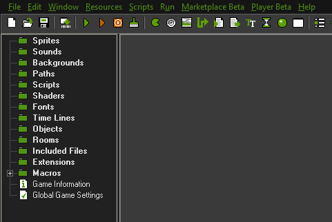

So you want to make your first video game, but have no idea where to begin? Well you're in luck because today I'm going to explain how to make your own simple computer game with an easy to use game development engine called Gamemaker. I will be using Gamemaker Studio but just about everything done in these tutorials should work in the slightly older legacy versions such as Gamemaker 6, 7 and 8. You can download and use Gamemaker for free if you don't already have it. There is a couple of paid versions if you get really into it that will give you many more features such as exporting to the web and phones but for now I would recommend just getting the free version to try it out.
When you first open Gamemaker it will present you with a pretty basic window with some folders on the one side and lots of buttons in a toolbar at the top.  Each of the folders on the side represents a different type of recourse that you can put in your game. Sprites for example are basically images which you will use as your character, the walls, the enemies, and pretty much any other “thing” that you see in your game. Sprites can be animated and move around in your game on top of things called objects. Objects are another recourse and are the real backbone of any game. They work using a system of events and actions. When an event happens, say the player of your game presses a button on his keyboard you can have the object do something, an action. There are many different types of actions ranging all the way from simply moving a few pixels over on the screen, to changing color, and starting a count down timer.
To be continued (like we'll actually start making the game in part 1)
- Kota